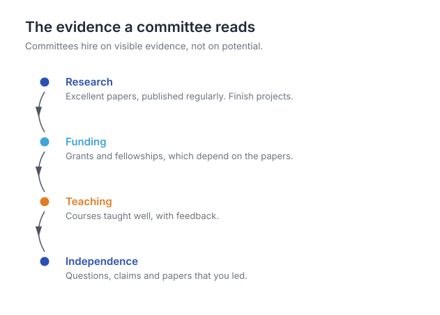

Guides · Careers
Building an academic career
Few doctoral graduates obtain a permanent academic position. Hiring committees decide on evidence, not potential. Know what evidence they look for, finish your projects, plan for the gaps in your record, and decide consciously whether to play.
Path · Finishing and moving on · step 2 of 5
Next in this path: Applying for postdoctoral positions →
Many students start a PhD hoping to become professors. Few know how small the chances are, or how the decisions are made. This guide describes the academic job market honestly, so that you can decide whether to aim for it and how. It complements the guides on postdoctoral applications and on managing your PhD.
The numbers#
Data are incomplete, and they vary by country and field. As an order of magnitude, for the United Kingdom:
- About one doctoral graduate in five enters a university research job, such as a postdoc, in the year and a half after the degree. Most of these contracts are fixed-term.
- Estimates suggest that only around one postdoc in ten eventually obtains a permanent academic position.
- Putting these together, very roughly, one student in a cohort of forty may end up in a permanent academic job.
The odds improve in some fields and countries, and they are worse in others. Check the figures for your own field. Not every postdoc wants a permanent position either, and many careers outside academia use a doctorate well.
Committees hire on evidence#
For most permanent research positions, a committee looks for evidence of three things:
- Research. You can publish excellent work, regularly.
- Funding. You can win grants, fellowships or other competitive money.
- Teaching. You can teach well.
The weights differ between universities and countries, but for research positions the first two usually dominate, and the second depends heavily on the first. A grant panel is placing a bet. Publications show that you can turn an idea into a finished result that survives scrutiny.
A committee cannot hire potential. It reads a CV and a few documents, among dozens or hundreds. Hard work, busy weeks and promising ideas are not visible there. Papers, grants and teaching experience are.
Finish your projects#
Many good researchers are excellent at starting projects and slow at finishing them. Academic careers reward completed stories: a question, a claim, the evidence, written up and submitted. At some point a collection of results must become a paper.
If you have several open projects, the most useful step is often to close one of them, not to open another.
A strategy for the gaps#
- Identify the gap. Which of the three kinds of evidence is weakest in your record?
- Plan to fill it. Finishing a paper, writing a fellowship application, taking a course to teach, building a collaboration, or making your research identity clearer.
- Test, learn, adapt. Applications fail often. Each rejection tells you something about how you present your work. Rewrite, ask for feedback, apply again.
Independence#
Supervisors and mentors can explain the rules, give feedback, write letters and create opportunities. They cannot become independent on your behalf. A letter that says you lead research is credible only if you did: you chose the question, made the claim, selected the evidence and drove the paper to the end.
Practise this early. Bring your supervisor a proposed story for your next paper: the question, the main claim, the evidence, what is missing and why it matters. Then discuss it.
Luck, and what you can control#
Luck matters: the right place, the right time, the right idea, the right opening. Opportunities are not distributed equally. But a lot of what looks like luck rests on years of work that nobody sees: skills, a network of people who trust your work, many applications written and rejected. That work does not guarantee anything. It changes the odds, and it lets you use an opportunity when one appears.
Decide whether to play#
A rejected application is not a verdict on your worth as a scientist. It means that one committee, in one round, chose someone else. Keep the score of the game separate from your value as a person.
You may also decide that the game is not worth playing: the uncertainty lasts too long, the sacrifices are too large, or the jobs incompatible with the life you want. That is a legitimate choice, not a defeat. Ask yourself early what you are willing to give for an academic career, and what you are not.
Checklist#
- I know the realistic odds in my field and country.
- I know which of research, funding and teaching is weakest in my record.
- I have a plan to finish at least one open project this year.
- I have written, or started, a fellowship or grant application.
- I can present the story of my next paper myself.
- I have decided what I am willing, and not willing, to give for this career.
Summary#
- Permanent academic positions are rare, and decisions rest on visible evidence.
- Research, funding and teaching are the three kinds of evidence.
- Finish projects. Plan for the gaps in your record. Learn from rejections.
- Independence must be shown, not claimed.
- Deciding not to play is a legitimate choice.
Further reading#
This guide draws on an essay on Substack by a physicist who leads a research group, which gives the sources of the figures above:
- Davide Michieletto, Academia is a game. Learn the rules before you play, 2026.
Discussion
Questions, corrections and your own experience are welcome. Comments live in the forum, on GitHub Discussions, with Markdown and LaTeX.